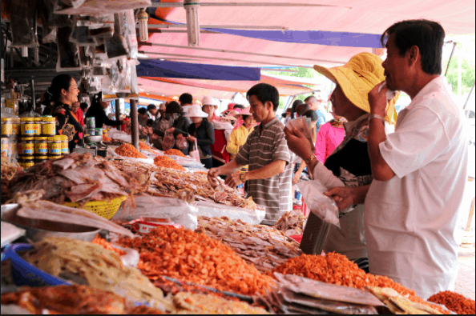
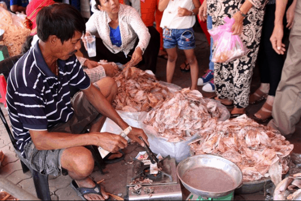
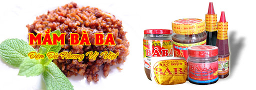

5 Món quà ngon bạn nhớ mua khi thăm Vũng Tàu Bạn về nhé
Đặc sản Vũng Tàu là gì? Đặc sản khô tại nơi đây có gì mới lạ? Hãy cùng "Vũng tàu tất tần tật" khám phá về văn hóa ẩm thực của một thành phố biển có gì đặc biệt không nhé mà sao được nhiều thượng khách khen ngợi đến thế.
1. Bánh bông lan trứng muối

Bánh bông lan trứng muối là một món quà không thể bỏ qua của du khách thập phương nếu có dịp đi du lịch đến thành phố biển xinh đẹp. Khách du lịch nhất định phải mua đặc sản Vũng Tàu này mang về cho người thân thưởng thức đấy nhé.
Được làm từ những nguyên liệu đơn giản như bột, nhân trứng, phô mai với cách chế biến riêng biệt mang đến một hương vị vô cùng khó quên. Vỏ bánh mềm hòa quyện với vị mặn của trứng muối sẽ làm tan chảy trái tim của bất cứ thực khách nào có cơ hội được một lần thưởng thức món bánh này. Sản phẩm phù hợp để làm quà cho cả người lớn và trẻ nhỏ.
- Địa chỉ: 17B Nguyễn Trường Tộ, phường 2, thành phố Vũng Tàu
- Giờ mở cửa: 06 – 22 giờ tất cả các ngày trong tuần
- Giá dao động: 25.000-40.000 vnđ/hộp
2.Bánh tiêu món ăn đặc sản ở Vũng Tàu

Bánh tiêu là một món ăn quen thuộc của nhiều người dân Việt. Thế nhưng bánh tiêu Vũng Tàu lại gợi cho thực khách nhiều ấn tượng khó quên.
Vỏ bánh được chiên nóng hổi kết hợp với cái vị ngọt thanh, mềm dịu của nhân đậu xanh. Đem lại thứ hương vị đặc biệt mà không ở đâu có được. Bánh tiêu là món đặc sản Vũng Tàu ngon rẻ mà nhất định du khách phải thử và mua về cho người thân đấy nhé.
Đây là món đặc sản phù hợp với mọi đối tượng. Từ trẻ em cho đến người già đều không thể nào khước từ được sự hấp dẫn đối vói món bánh tiêu này. Tuy nhiên, thời gian bảo quản bánh khá ngắn từ 1 – 2 ngày. Nên du khách mua bánh tiêu về làm quà thì chỉ nên đi du lịch trong ngày, như vậy ăn bánh sẽ ngon và đảm bảo nhất.
- Địa chỉ: số 43 đường Đồ Chiểu, thành phố Vũng Tàu
- Giờ mở cửa: 16h -22 giờ tất cả các ngày trong tuần
- Giá dao động: 3.000 – 5.000 vnđ/cái
3. Nước mắm Trí Hải

Vũng Tàu là một thành phố biển, do đó nước mắm luôn là thứ đặc sản không thể thiếu. Và trong nhiều thương hiệu đang được bày bán trên thị trường hiện nay, Trí Hải được xem là cái tên quen thuộc nhất, được đông đảo người dân và du khách lựa chọn.
Là một thương hiệu sản xuất mắm lâu đời, nước mắm Trí Hải giữ trọn vẹn hương vị của biển cả ở trong sản phẩm. Mang đến cho người dùng những giọt nước mắm nguyên chất, thơm ngon nhất. Chính vì thế không có gì là lạ khi giữa thị trường cạnh tranh như ngày nay Trí Hải vẫn rất nổi tiếng và chiếm được lòng tin yêu của người sử dụng.
Du khách đừng quên mua đặc sản Bà Rịa Vũng Tàu nước mắm Trí Hải về làm quà cho các bà, các mẹ nhé. Họ sẽ là những người cảm thấy vui vẻ nhất khi được nhận món quà ý nghĩa này. Đối với họ không điều gì hạnh phúc hơn là nấu những món ăn ngon cho người thân của mình và Trí Hải góp phần không nhỏ tạo nên những mâm cơm tuyệt vời.
- Địa chỉ: 103 Phạm Hữu Chí, Long Hiệp, Long Điền, tỉnh Bà Rịa Vũng Tàu
- Giờ mở cửa: 7 – 17 giờ tất cả các ngày trong tuần
- Giá dao động: 50.000 – 60.000 vnđ/suất
4. Hải sản khô
Địa chỉ: Nằm bên cạnh chợ Bà Rịa
Đây là khu chợ chuyên bán các loại hải sản khô như: mực, tôm, cá… luôn tấp nập khách mua hàng.
Hải sản khô ở đây được người dân tự phơi tự bán, không mất phí vận chuyển nên có giá khá rẻ. Mực khô là loại hải sản đắt hàng nhất ở chợ, giá mực có giá khá rẻ so với bên ngoài mà các gian hàng còn có luôn bếp nướng mực cho du khách ăn thử để đảm bảo mực thật.
Các loại cá khô ở đây cũng được tẩm ướp rất ngon với giá dao động từ 30.000 đến 100.000 đồng/ kg tuỳ từng loại cá
5. Mắm ruốc Bà Ba
Cơ sở sản xuất mắm ruốc Bà Ba từng 3 năm liền (2012-2014) được UBND thị trấn Long Điền chứng nhận là Hàng công nghiệp nông thôn tiêu biểu; 2 năm liền (2012-2013) được UBND huyện Long Điền chứng nhận là Hàng công nghiệp nông thôn tiêu biểu.
- Chế biến từ ruốc tươi, muối, đường, bột ngọt
- Cách dùng : pha thêm một ít gia vị như ớt, tỏi, chanh, đường v.v..
- Đặc biệt : dùng với bún, thịt luộc cuốn bánh tráng và các loại trái cây như xoài, cốc, ổi. Dùng với bún riêu, bún mộc, canh bún.
- Bảo quản : để nơi khô ráo, tránh ánh nắng trực tiếp chiếu vào. Đậy nắp kín sau khi sử dụng
- Không sử dụng đường hóa học và các chất bảo quản ( độc hại )
Địa chỉ: Số 3 Võ Thị Sáu, KP Long Nguyên, Long Điền, BRVT